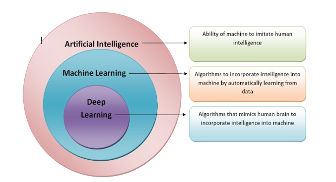

Getting Started

Benefits
- Lack of sufficient human expertise in a domain (e.g., simulating navigations in unknown territories or even spatial planets).
- Scenarios and behavior can keep changing over time (e.g., availability of infrastructure in an organization, network connectivity etc).
- Addressing domain specific problems at scale with huge volumes of data with too many complex conditions and constraints.